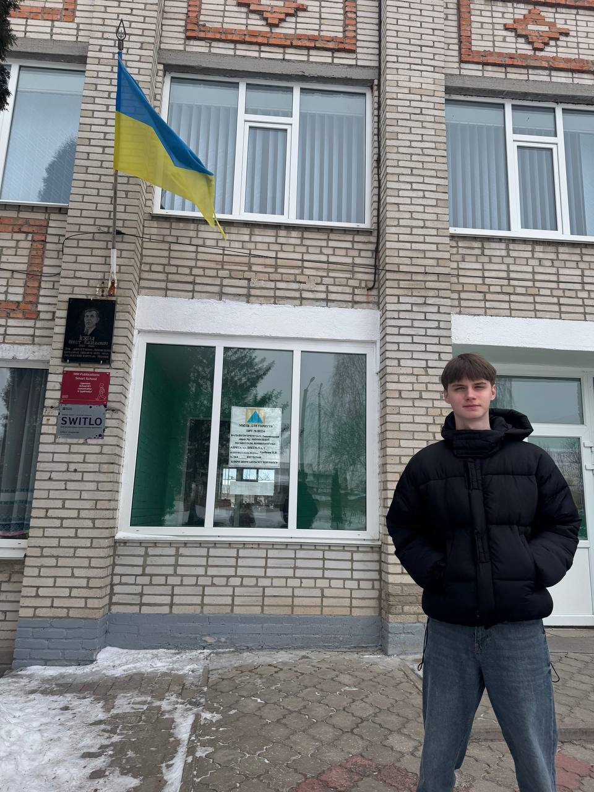

Відгук про педагогічну практику

Педагогічну практику я проходив у Липовецькому ліцеї № 1 ім. В. Липківського. Вона стала важливим етапом у моєму професійному становленні як майбутнього вчителя інформатики. Під час практики я мав можливість безпосередньо долучитися до освітнього процесу, спробувати себе в ролі вчителя та застосувати на практиці знання, отримані під час навчання.
З перших днів перебування в закладі освіти я відчув підтримку з боку педагогічного колективу. Це допомогло мені швидше адаптуватися до шкільного середовища та впевненіше працювати з учнями. Я ознайомився з організацією навчального процесу, особливостями ведення документації та плануванням уроків.
Особливо цінним для мене був досвід проведення уроків у 5–8 класах. Під час занять я намагався доступно пояснювати матеріал, використовувати приклади з реального життя та залучати учнів до активної роботи. Важливим було створення доброзичливої атмосфери, у якій учні могли вільно висловлювати свої думки та не боялися помилок.
Окрему увагу я приділяв практичній складовій уроків, адже саме вона дозволяє учням краще засвоювати матеріал. Робота за комп’ютерами дала змогу учням застосовувати знання на практиці, а мені — навчитися організовувати їхню діяльність та допомагати у виконанні завдань.
Під час практики я також виконував обов’язки класного керівника 7-Б класу, що дало змогу глибше зрозуміти виховну роботу в школі. Я брав участь у підготовці та проведенні виховних заходів, спілкувався з учнями, намагався підтримувати позитивний психологічний клімат у колективі.
Цей досвід допоміг мені усвідомити, що робота вчителя полягає не лише у викладанні навчального матеріалу, а й у формуванні особистості учня, розвитку його навичок та цінностей.
Загалом педагогічна практика стала для мене важливим і корисним етапом. Вона дозволила мені краще зрозуміти специфіку роботи вчителя, оцінити власні можливості та визначити напрямки подальшого професійного розвитку.